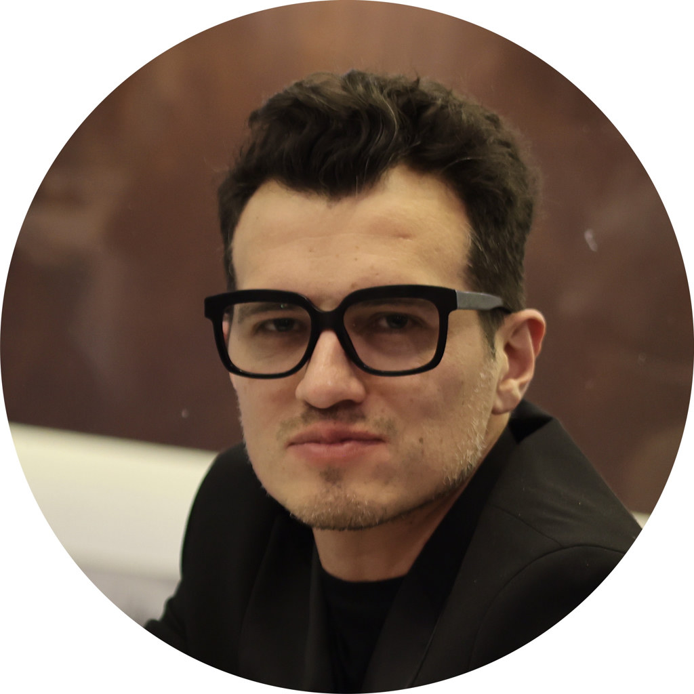
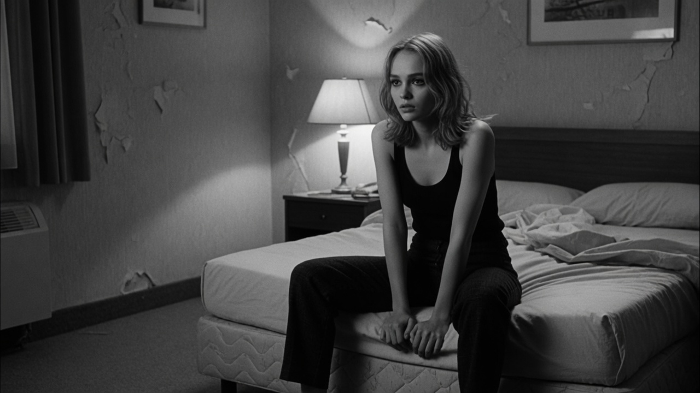
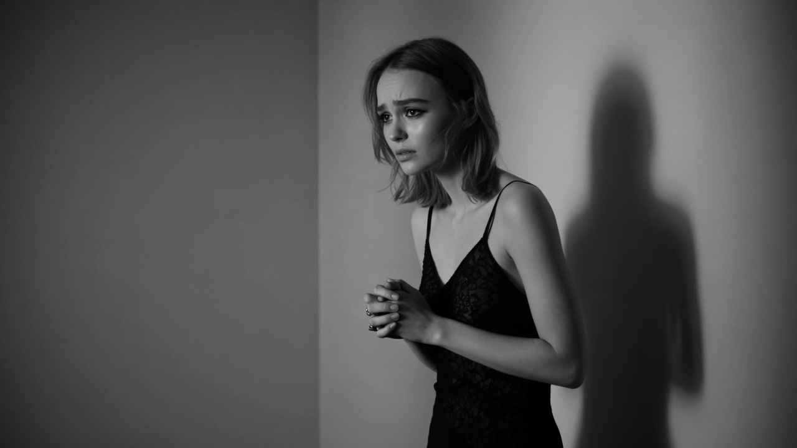
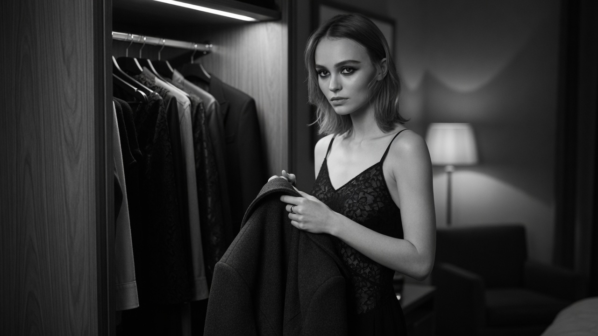

Olivia Rodrigo — GUTS
Analyse de la typographie et du mouvement dans la pochette animée d’album Apple Music.
Director Creativo Senior & Guionista · Cine, Moda y Medios
Concepteur-rédacteur & producteur — Canal+ (Déjà Vu, Séries Entre Potes, La Scène). Depuis 2012, je conçois et produis des récits visuels pour médias, institutions culturelles et marques internationales.
Couvertures / éditions festivalières Canal+ · Cannes 2021 · Berlinale 2022 · Mostra 2023 · Deauville 2024 · vidéo hommage César 2019 (Robert Redford)

Formats 9:16 · Mobile First & Fashion Essays
Analyse de la pop culture, décryptage de pochettes d’albums et narrations de mode déclinées en format vertical 9:16.
Analyse de la typographie et du mouvement dans la pochette animée d’album Apple Music.
Décryptage visuel de l’esthétique Miu Miu et des parallèles cinéma de la Maison.
Étude des rimes visuelles, parallèles cinématographiques et symbolique visuelle.
Sélection — Déjà Vu
Format Déjà Vu (Canal+) — 6 saisons, 87 épisodes standards (+ 18 éditions festivalières). Concept et musique originale : César Cabrera (Extended Void).
Parallèles visuels autour du film Eiffel — recherche iconographique et montage éditorial Canal+ Cinéma.
Analyse et parallèles visuels entre la haute couture des défilés et l’élégance des silhouettes sur le tapis rouge du Festival de Cannes — édition couverture festivalière (Cannes 2021).
Compositions originales, textures sonores et habillage audio pour les formats éditoriaux Canal+, séries et projets créatifs.
Conception de bibles de programmes, prototypes d’émissions culturelles et formats de flux 360° créés et produits en interne.
Concept personnel · Spec
Une chambre, une attente, un flacon discret, un vide. Pas de voix-off. Pas de super de marque. Le parfum n’est pas un packshot : c’est une trace. Storyboard + animatic stills — phase standard avant engagement tournage.
Animatic stills · FFmpeg hard cuts · 70″ plans + 5″ générique fade · Télécharger MP4
Notes de production : flacon taille main uniquement · verre vierge · 2 beats max · aucun logo · animatic stills = livrable avant producteur exécutif / devis / tournage. Déclinaisons 360° possibles (hero 16:9 · stories 9:16) après lock créatif.
Storyboard — 10 plans
Lock image : 16:9 · noir et blanc · chambre d’hôtel psychologique · caméra fixe · silence · un flacon discret sans marque. Plan 10 = générique « César Cabrera » sur fond noir (pas d’image téléphone).






Fiche plans détaillée
Plan 01 · TC 00:00–00:07 · 7″ · ROOM
Plan 02 · TC 00:07–00:13 · 6″ · WAIT
Plan 03 · TC 00:13–00:18 · 5″ · GESTURE
Plan 04 · TC 00:18–00:26 · 8″ · GESTURE
Plan 05 · TC 00:26–00:34 · 8″ · TRACE
Plan 06 · TC 00:34–00:40 · 6″ · SEEN
Plan 07 · TC 00:40–00:48 · 8″ · WAIT
Plan 08 · TC 00:48–00:56 · 8″ · TRACE
Plan 09 · TC 00:56–01:04 · 8″ · AFTER
Plan 10 · TC 01:04–01:10 · 6″ · HOLD / GÉNÉRIQUE
Profil
Scripts, scénarios, tone of voice, direction artistique, production exécutive — films publicitaires, digital, social — pour un poste de Concepteur-Rédacteur Senior Films & Images (Parfums Beauté).
Curriculum vitæ · adapté poste
Concepteur-Rédacteur Senior — Films & Images · Storytelling de marque & campagnes 360°
+33 6 02 08 16 48
·
extendedvoid.prod@gmail.com
134 rue du Renard, 76000 Rouen · Mobile Paris / Neuilly-sur-Seine
Concepteur-rédacteur senior films et images — narration visuelle et concepts de campagnes pour médias premium et marques internationales. Identification des enjeux de brief, élaboration de concepts originaux déclinables en communication 360° (TV, cinéma, digital, print, CRM, social media). Scripts et scénarios pour films publicitaires et contenus digitaux ; cohérence de tone of voice avec les équipes rédactionnelles et la Direction de Création. Solide connaissance des canaux digitaux et des étapes de production d’une campagne visuelle (storyboard, animatic, film). Humilité et collaboration interdisciplinaire.
Alignés offre CDI — Concepteur-Rédacteur Senior Films et Images · Parfums Beauté · Neuilly-sur-Seine
CV adapté pour un poste de concepteur-rédacteur senior films & images (Parfums Beauté) — priorisation narration visuelle, 360°, tone of voice ; sans angle software engineer.
Candidature · France Travail
Textes alignés sur ce one-pager (Absence, festivals vérifiés, mots-clés de l’offre).
À coller dans les champs France Travail ou à joindre en .txt.
Offre n° 4406638 — CDI Concepteur-Rédacteur Senior Films et Images · Parfums Beauté.
Même contenu que le CV web + mots-clés offre en clair (parseur ATS / champs libres FT).
Ton plus personnel et conversationnel (pourquoi ce poste), style Maison : précis, humble, sans jargon tech. Portfolio « Absence » à jour.
Case study « Absence » · CV ATS · lettre · concept personnel · spec Parfums Beauté.
extendedvoid.prod@gmail.com CV PDF Copier ATSAwesome Master Catalog · Archives 2012–2026
Catalogue structuré des créations, formats télévisuels, essais viraux et compositions sonores par César Cabrera (AKA Extended Void / Candice Drouet).